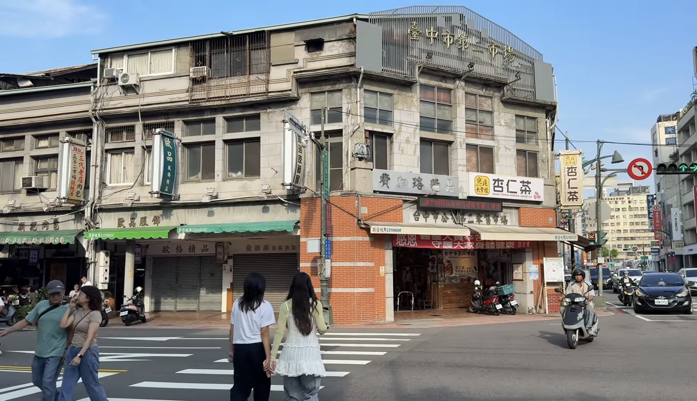

影展章節影片目錄 (第 1 頁)
點選下方影片章節卡片，了解《都心迴響》紀錄片中收錄的不同台中地區慢遊主題：

第一章：綠能微風
搭乘電動公車穿越台灣大道與綠園道，體驗寧靜無污染的無噪音通勤時光。

第二章：巷弄尋味
於舊城區傳統市場下車漫步，深入傳統在地老店，品嚐屬於台中的獨特風味。
第三章：低碳綠洲
探索綠色運具如何改變都市呼吸質感，紀錄台中空氣改善與永續行動的努力過程。
第四章：心跳城市
在傍晚華燈初上之際，乘坐公車靜靜觀察市區街景，聽見繁華台中最溫柔的心跳聲。